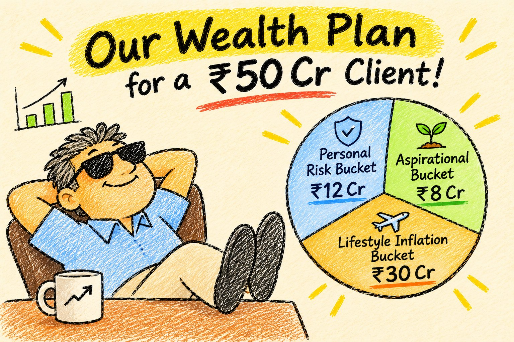

How we planned ₹50 crore for one family. In three buckets.
A client sold his business and asked a simple question: "Now what?" This is the plan we built, the maths behind each bucket, and the one rule he is not allowed to break.


- Big money has one job before it grows: protect the life the family already lives.
- Bucket 1, Personal Risk, ₹12 crore. Six years of living costs, kept in safe and liquid products.
- Bucket 2, Lifestyle Inflation, ₹30 crore. Built to beat a 9% rise in lifestyle costs. Mostly equity, some fixed income.
- Bucket 3, Aspirational, ₹8 crore. Money he can forget for 10 to 15 years. High risk, aiming for 10x.
- A small fourth bucket holds the family wedding money. Products come last, after the plan is fixed.
Mr. Shirke signed the share sale papers on a Tuesday. By Thursday, three banks, two PMS houses and one cousin had called him with ideas.
He is 56. For 28 years he built an auto parts company in Chakan. Now, after the stake sale and his earlier savings, the family has about ₹50 crore in investable money.
When he came to our office in Sadashiv Peth, he didn't ask which fund was best. He asked a better question.
"I've made the money. How do I make sure my family never feels the difference?"
Mr. Shirke is a made up name, and some details are changed. The plan, the buckets and the maths are how we actually work with families at this level.
Why we don't start with returns
Most people with ₹50 crore are not worried about becoming poor. They are worried about something more specific.
Their life has a shape. The children's school. The club. The yearly trip abroad. The circle they move in. If the market falls 30% and they have to cut back, that hurts far more than a missed return.
So before we pick a single product, we ask three questions:
How much do you spend in a normal year, including the comfortable extras?
How much can you forget about for 10 to 15 years?
Any big expense coming in the next 2 to 3 years?
His answers: ₹2 crore a year. ₹8 crore. And yes, a wedding in the family in about two years.
That gave us the whole plan.
Bucket 1: Personal Risk, ₹12 crore
This is not an emergency fund. Families like his already have that sorted.
This bucket protects their way of life. If a black swan event hits, or markets crash and stay down for years, the family keeps living exactly as before. Nobody sells equity at the bottom to pay school fees.
We covered six years of spending. Now, 6 × ₹2 crore is ₹12 crore, but that ignores inflation. At 9% a year, ₹2 crore of spending becomes ₹3.1 crore by year six. Over six years, the total is about ₹15 crore.
So why only ₹12 crore? Because the money isn't sitting idle. At around 7% a year, the bucket earns while it pays out.
It runs almost exactly to zero at the end of year six. That's by design. Before it empties, the next bucket refills it.
Bucket 2: Lifestyle Inflation, ₹30 crore
This is the engine. Its job is to keep the family's lifestyle ahead of its own inflation.
And lifestyle inflation is not CPI inflation. CPI tracks vegetables and petrol. A family like this spends on international travel, five star hotels, business class seats and private school fees. Those costs rise much faster. We assumed 9% a year.
To beat 9%, this bucket needs growth, but it can't take wild risk. We split it:
We kept the equity assumption at 12% on purpose. India's long term equity history is higher, but plans built on hopeful numbers fail quietly. If reality beats 12%, good. The plan doesn't need it to.
Here's how the two buckets work together. If returns hold, this ₹30 crore grows to about ₹54 crore by year six, before tax. At that point we move about ₹21 crore into the Personal Risk bucket to cover the next six years of spending. The rest, about ₹33 crore, keeps growing.
Every six years, the engine refills the safe tank. The family never has to sell in a panic.
Bucket 3: Aspirational, ₹8 crore
This bucket carries the most risk, and it needs the most discipline.
Mr. Shirke said he could forget ₹8 crore for 10 to 15 years. So we treat it like a long term business bet. The aim is to make it 10x.
Is that realistic? Here is the plain maths.
Our target is 20 to 25% XIRR. At 20%, ₹8 crore becomes about ₹71 crore in 12 years. Close to 10x, not quite. At 15%, which is still a good result, it becomes about ₹43 crore.
I told him this straight. 10x is the goal, not the promise. Even 5x on money he didn't need is a great outcome.
The one rule he can't break
Wealth plans rarely fail on maths. They fail on behaviour.
Picture year four. The Aspirational bucket is up 80%. Markets are buzzing. Everyone at the club is talking about a new fund. And the Personal Risk bucket is sitting in FDs at 7%, looking boring.
That's when the temptation comes. "Let's move some FD money into the hot stuff."
We wrote the rule into the plan on day one. Money flows into the Personal Risk bucket. It never flows out to chase returns.
The fourth bucket: a wedding in two years
A wedding is a known expense with a known date. That money should not be in equity.
So we created a Short Term Expense bucket. We moved the wedding budget out of the Lifestyle bucket into safe, short duration products, timed to the dates. Whatever the market does in the next two years, the wedding is paid for.
Only now, the products
Notice that we haven't named a single fund yet. That's deliberate.
Once the buckets were fixed, we filled each one from our researched list. We also checked every product the family had been pitched, including the cousin's tip. Every product had to clear five tests:
The best in its categoryRated on our six pillar framework: People, Parent, Process, Portfolio, Performance and Price.
Suits this portfolioA great product in the wrong bucket is still the wrong product.
Lowest cost for the jobOn ₹50 crore, a 0.5% fee gap is ₹25 lakh a year.
Highest efficiencyTax, liquidity and paperwork, all counted.
Better performanceJudged against the right benchmark, after fees.
A few pitched products didn't make it. One had a lovely deck and a 2.5% fee for something a mutual fund does at 0.7%.
What sits around the plan
At this level, investing is only part of the job. We also worked with the family on:
- Will planning, with their lawyer
- Tax planning on the sale proceeds
- Nominations across every account
- A one page money map for his wife and children
- Actual spending vs the ₹2 crore plan
- Lifestyle bucket vs 9% inflation
- Refill timing for the safe bucket
- Each product against its benchmark
My take
₹50 crore sounds like it solves everything. It doesn't. Without a structure, big money gets pulled in ten directions: bank RMs, PMS pitches, real estate, relatives.
The bucket method gives every rupee a job. One bucket protects the life. One grows to keep up with it. One takes the big swings. Because each bucket knows its job, the family can ignore most of the noise.
When we finished, Mr. Shirke leaned back and said, "So I can stop checking the market every morning?"
"You can," I said. "We'll check it for you."
See you in the next one,
Atharva
Planning a large corpus for your family?
Send me your WhatsApp number. I'll start with the same three questions, then build the buckets for your life, not a product list. No spam. No calls unless you ask.
About the numbers: All projections are my own simplified maths, before tax, using assumed returns: about 7% for the Personal Risk bucket, 12% for equity and about 7.5% for fixed income in the Lifestyle bucket, and 15 to 25% for the Aspirational bucket. Real returns will differ, sometimes a lot. Lifestyle inflation is assumed at 9% a year.
Disclosure: This is for learning only and is not a recommendation to invest in any product. Investments in mutual funds, SIFs, PMS and AIFs are subject to market risk; read all scheme and offer documents carefully. PMS needs a minimum of ₹50 lakh and AIFs ₹1 crore by SEBI rule. Savitr Investments distributes investment products and may earn a distribution fee when clients invest through us. Mr. Shirke is a fictional character based on a real planning approach. Atharva, Savitr Investments, Pune. AMFI registered Mutual Fund Distributor, ARN 291687.